Cigar Review: Backwoods Whisky
This is another cheap convenient store cigar, or cigarillo, that cost about CAD$5. I picked up at Haze Smoke Shop (Commercial).
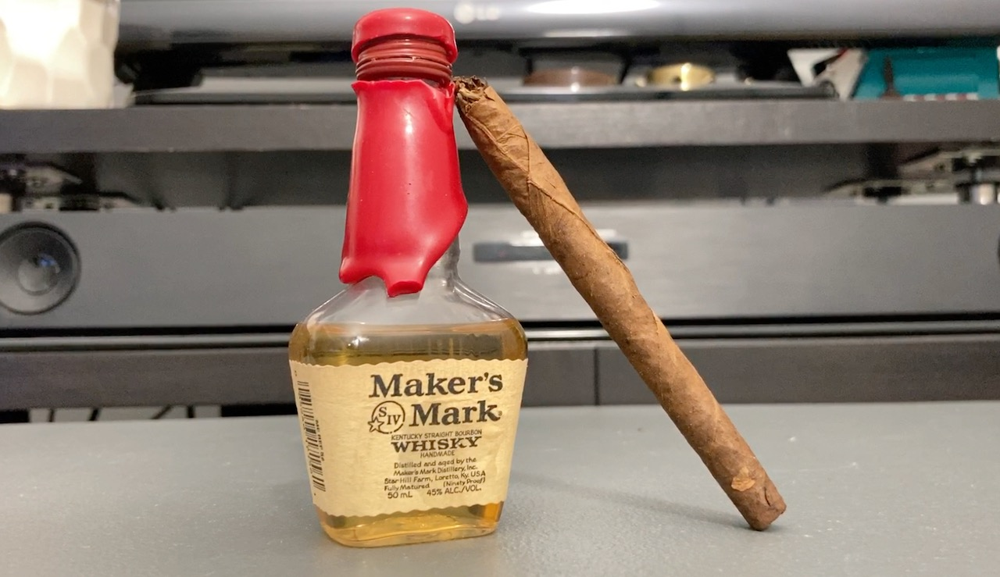
The package for us Canadians is nothing fancy. Just in this military green uniform sleeve. The salesperson told me that the cigar was made in Canada, but wasn't true at all. 😅 Backwoods is a US brand and the cigar is made in Dominican Republic.
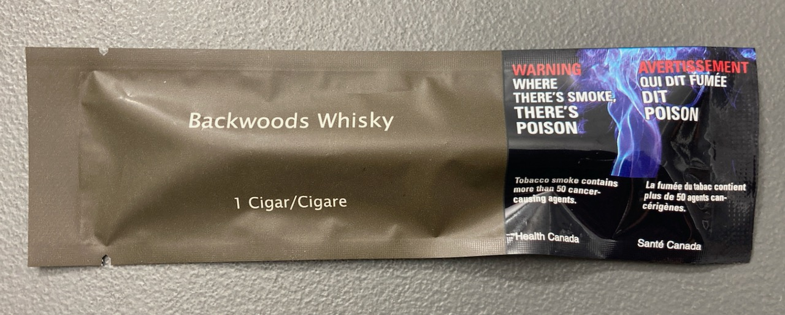 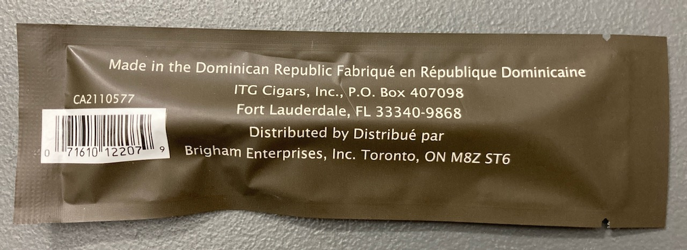
The foot of the cigar is slightly squished. I would probably recommend buying a pack for these because it comes in a paper box package that hopefully means the cigar are less likely to be damaged. It is also a few cent cheaper if you calculate the price per stick.
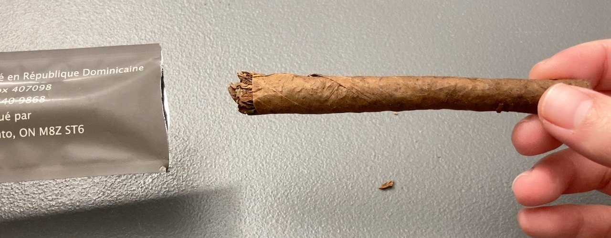
This one doesn't come with a band and it's rather thin. It is a machine-made short-filler cigar as Phillies cigars. Comparing the sizes, this one is more compact and dense than Phillies cigars. The black dots on the wrapper and the white fillings kinda reminds me of Romeo Y Julieta No. 2. I hope it wasn't mold and that it's just a certain type of leaves and that I would be ok.
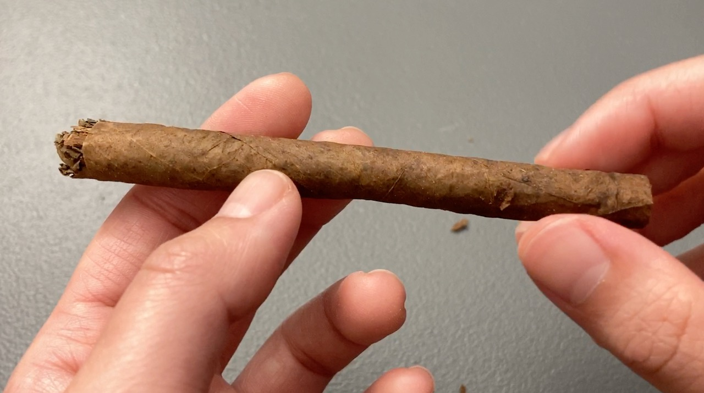 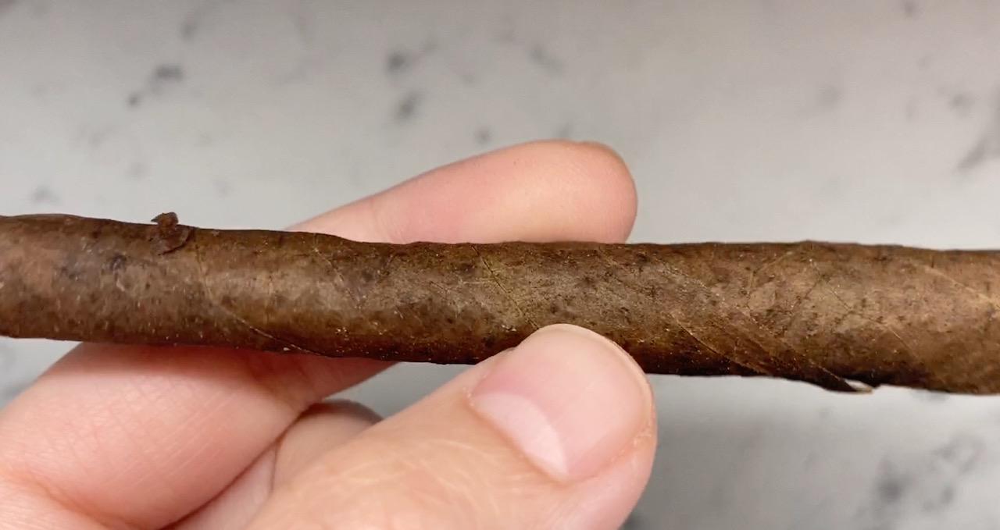 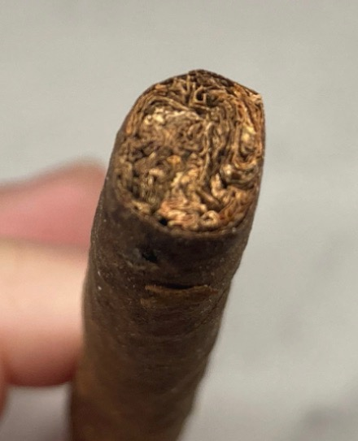
The cigar is pre-cut. I guess there's no point of doing trying punch-cut or v-cut since it's so thin. They just straight-cut it for ya. And I thought to show a quick pic of the short filler.
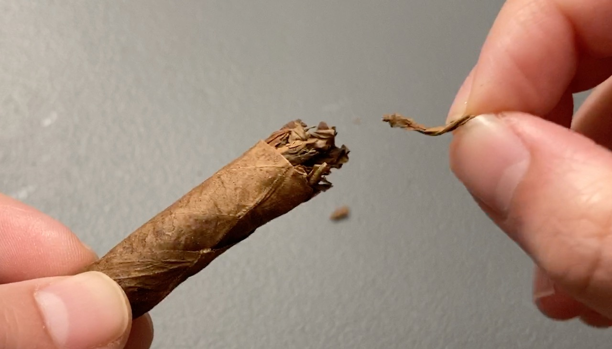
This is actually the cigar that I accidentally dropped in water. 😳 The pic below is the only picture with the cigar after water accident. It doesn't look that much different from its original state. I had it sit for another day to dry and cut it slightly shorter before lighting it up on fire.
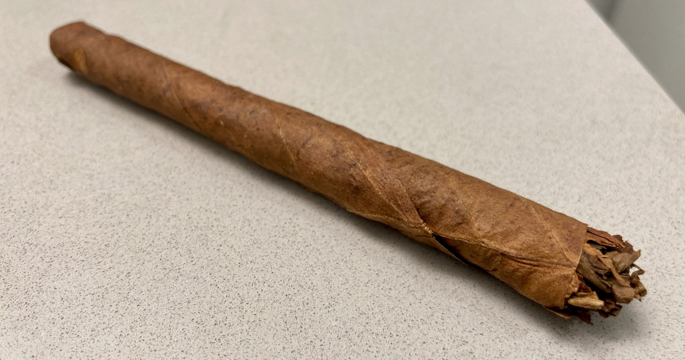
In turn of the flavour (take it with a grain of salt because of the water damage), it started off with the sweet almost sugary taste on my lips. Toward the middle after, I pretty much could not taste anything, but maybe regular tobacco smoke. Not unpleasant, just smokin' it, y'know? I had a hard time picking up the whisky flavour as usual, but it was a pretty smooth cigar for me. No sharpness on my tongue, but I don't know if the water actually diluted anything.
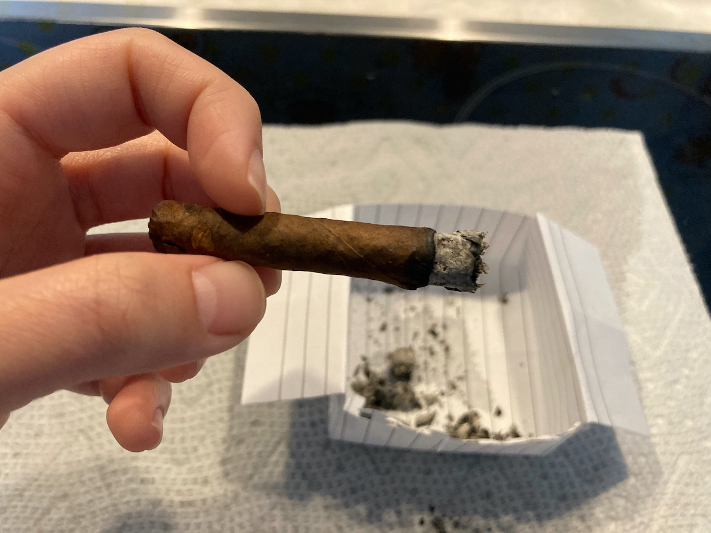 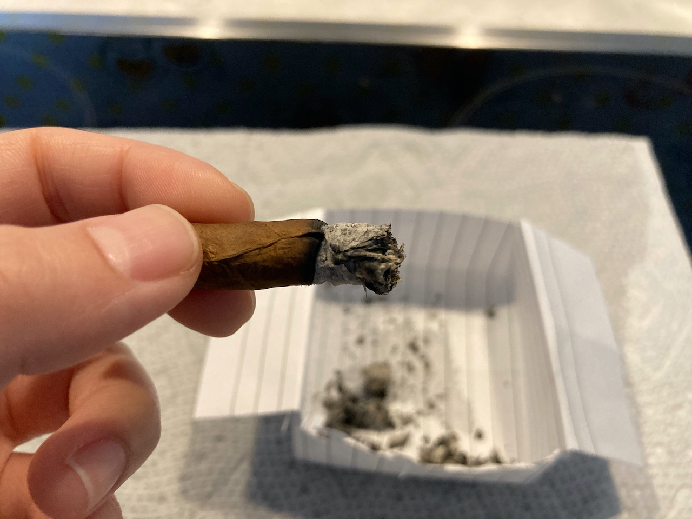 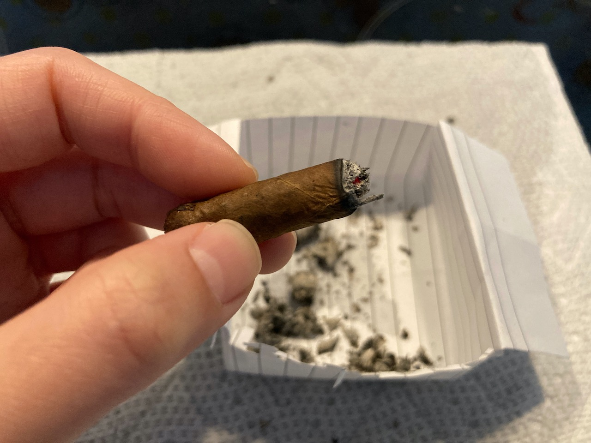 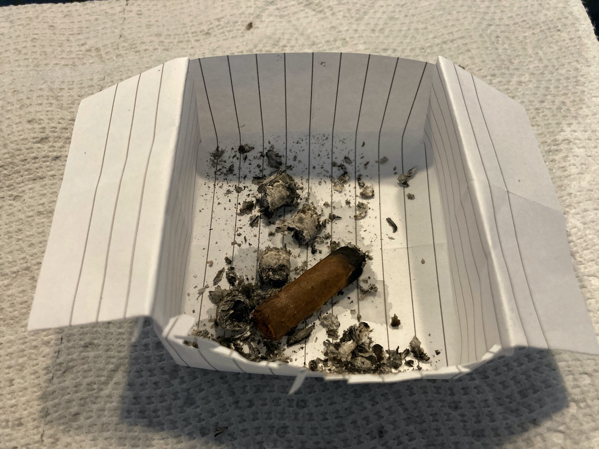
As you can see, the burn is not the best. The strength is slightly stronger than Phillies Blunt Strawberry, and it took me about 20 minutes to finish to smoke. Short and enjoyable. I am not an active smoker, so I only picked up a single stick to try. However, I think getting a pack might be more value to you depending on your needs. The shop told me that these do not require special maintenance (i.e. store in humidor) so that's easy to keep. I might try another one in a more reasonable state in the future if I have another chance, but that's all I have for now.
| Where did I get it? | Haze Smoke Shop (Commerical) |
| Price | About $5 |
| Smoke Time | About 20 min |
| Flavours | Sugar sweetness on the lips at the start, plain tobacco smoke after. Nothing fancy |
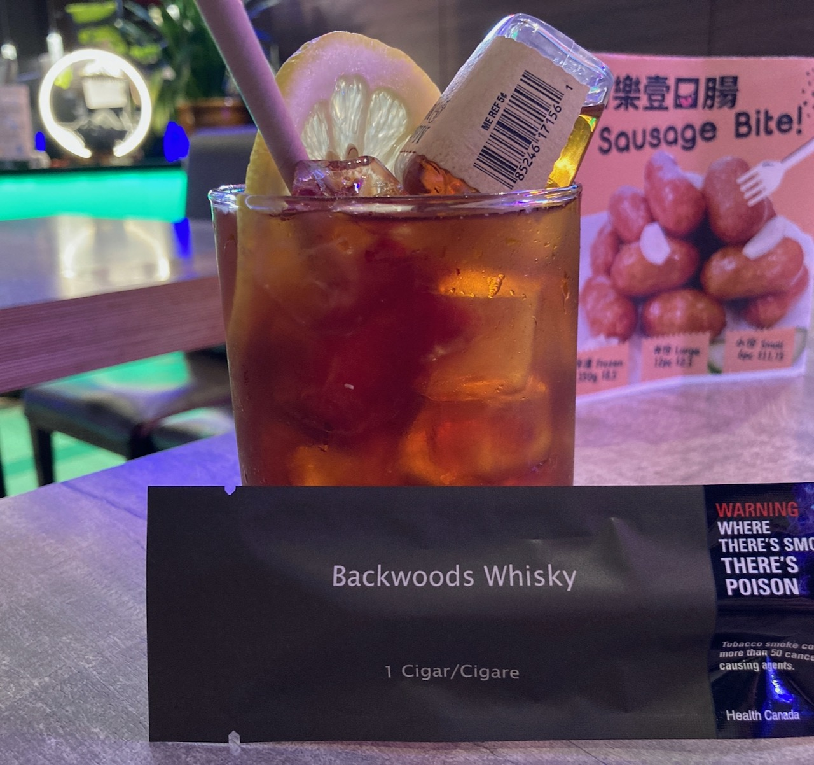 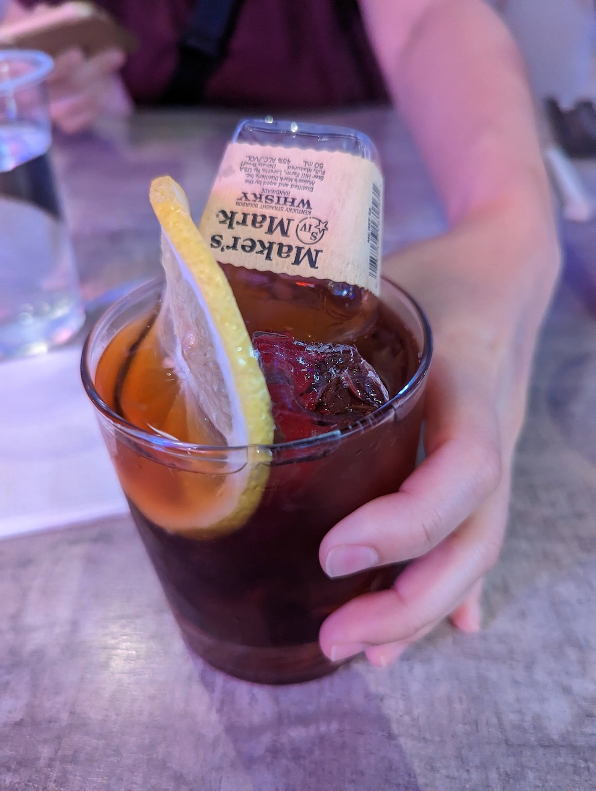